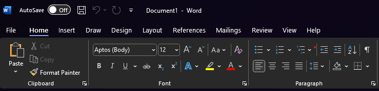

GIF Banera Veidošana ar Rastrgrafikas Rīku GIMP
Esmu pieredzējis GIMP (GNU Image Manipulation Program) lietotājs ar prasmēm attēlu rediģēšanā, apstrādē un grafiskajā dizainā. Protu strādāt ar slāņiem, maskām un caurspīdīgumu, lai veidotu sarežģītus attēlu kompozīcijas. Man ir pieredze attēlu retušēšanā un manipulācijā, tostarp krāsu korekcijā, kontrasta un spilgtuma pielāgošanā, fonu noņemšanā un objektu klonēšanā. Prasmīgi izmantoju filtrus un efektus, lai radītu unikālu dizainu un vizuālos materiālus. Zinu, kā efektīvi izmantot GIMP rīkus, piemēram, ceļus, tekstu, otas un gradientus, lai izveidotu ilustrācijas un dizaina elementus. Protu sagatavot attēlus dažādiem formātiem un pielāgot tos drukai vai digitālai lietošanai.

Uzklikšķiniet uz baneri lai lasīt vairāk par tēmu.
Logo veidošana ar Vektorgrafikas Rīku Inkscape
Esmu prasmīgs Inkscape lietotājs ar pieredzi vektorgrafikas izveidē un rediģēšanā. Protu strādāt ar Bezier līknēm, formām, ceļiem un slāņiem, lai radītu precīzus un estētiski pievilcīgus dizainus. Man ir pieredze logo, ikonu un ilustrāciju veidošanā, izmantojot Inkscape rīkus, piemēram, gradientus, maskas, kontūru rediģēšanu. Prasmīgi izmantoju teksta rīkus, lai radītu dizaina elementus. Protu sagatavot vektorgrafikas failus drukai un digitālai lietošanai, optimizējot tos dažādiem formātiem, piemēram, SVG, PDF, EPS un PNG.

3D Modeļa Veidošana ar TinkerCAD un to Printēšana
Esmu pieredzējis TinkerCAD lietotājs, kas prot veidot 3D modeļus, elektroniskās shēmas un kodu blokprogrammu interaktīvām simulācijām. Man ir prasmes strādāt ar dažādiem ģeometriskiem objektiem, pielāgojot to izmērus, formu un orientāciju, lai izveidotu detalizētus un precīzus modeļus. Esmu prasmīgs 3D drukas sagatavošanā, nodrošinot, ka modeļi ir optimizēti drukāšanai un atbilst tehniskajām prasībām. Strādāju ar grupēšanas, saskaldīšanas un izlīdzināšanas rīkiem, lai izveidotu sarežģītas formas un konstrukcijas. Papildus esmu apguvis TinkerCAD Circuits, kas ļauj veidot un testēt Arduino projektus, veidojot elektroniskās shēmas ar mikrokontrolleriem, rezistoriem, LED diodēm, sensoriem un citiem komponentiem. Spēju ātri apgūt jaunas funkcijas un pielāgot modelēšanas procesu dažādiem mērķiem – no prototipu izstrādes līdz izglītojošiem projektiem.

Video Izveide ar Clipchamp Video Radoktora Palīdzību
Esmu prasmīgs darbā ar Clipchamp – video rediģēšanas rīku, kas ļauj ātri un efektīvi veidot kvalitatīvus video materiālus. Protu strādāt ar video griešanu, apvienošanu un pāreju efektiem, kā arī pielietot teksta, skaņas un vizuālos efektus, lai uzlabotu satura kvalitāti.
Teksta Apstrāde MS Word
Esmu pieredzējis Microsoft Word lietotājs ar padziļinātām zināšanām teksta rediģēšanā, formatēšanā un dokumentu noformēšanā. Protu efektīvi izmantot stilus, tabulas, attēlus un diagrammas, lai izveidotu strukturētus dokumentus. Man ir pieredze darbā ar automatizētām funkcijām, piemēram, satura rādītājiem, kas ļauj optimizēt dokumentu izveidi un rediģēšanu.
MS Excel
Esmu pieredzējis Microsoft Excel lietotājs ar padziļinātām zināšanām datu apstrādē, analīzē un vizualizācijā. Protu strādāt ar formulām un funkcijām. Man ir prasmes darbā ar Pivot Table, kas ļauj ātri izveidot dinamiskus pārskatus. Protu izmantot un dažādus diagrammu veidus, lai uzlabotu datu pārskatāmību.